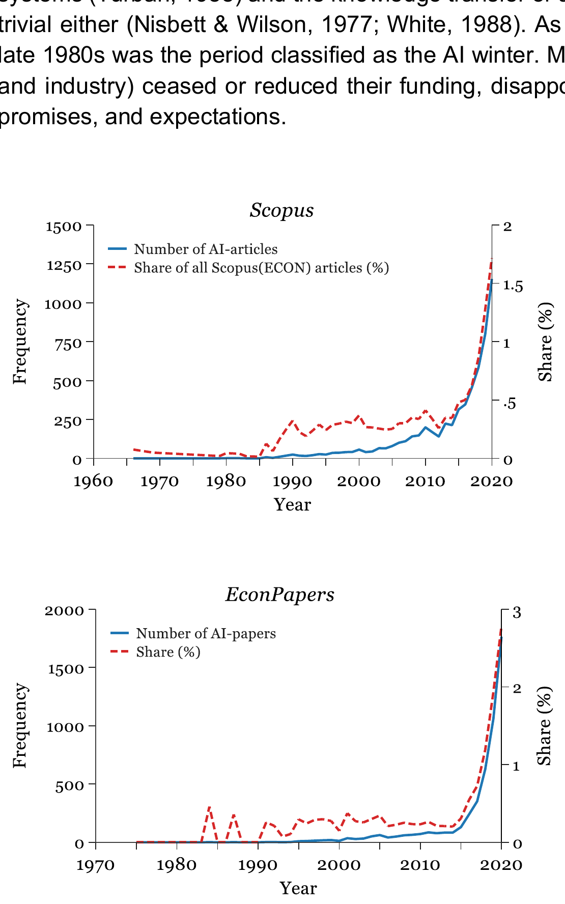
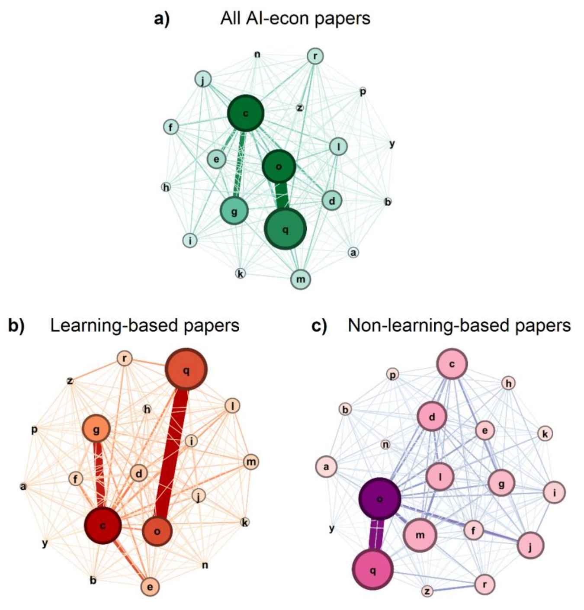

Artificial intelligence in the field of economics
53k publisher accesses · Altmetric attention score 16
Our study of how AI methods spread through economics.
Behavioural economics · AI · Complex systems
I study how people make decisions and respond to technological change. My work combines behavioural economics with computational methods and experience from engineering.
PhD in Economics · QUT · 2023
My thesis, Bridging Complexity and Behavioural Economics, began with a question about method choice: how do we decide which ways of studying a complex problem are worth pursuing?
The Constrained Methods Matrix (CMM) brings together nine broad families of analytical methods. It relates them to the number of causes involved, the scale of their effects, and the complexity and uncertainty of the information available. The framework grew out of work with Benno Torgler, building on ideas from Marvin Minsky, Aaron Sloman and Push Singh.
 View larger
View larger The boundaries are deliberately soft. A problem might call for statistical analysis alongside qualitative or case-based reasoning; collecting different data may also make other methods feasible. The CMM gives researchers a way to discuss those choices and their assumptions.
A change in individual behaviour can affect an organisation, while organisational rules shape what individuals can do. Those effects unfold at different speeds. The focal level depends on the research question: it might be a workplace, a sector or a region.
 View larger
View larger In the thesis, I applied this way of thinking to public health, financial markets, mobility and the development of AI. Two examples from the empirical work are below.
With Ho Fai Chan and Benno Torgler, I mapped the use and discussion of AI in economics using Scopus and EconPapers. These charts show the growth of that literature in the datasets used for our 2022 paper.

View largerWe also examined how economic subject classifications appeared together. Comparing the networks for learning-based and other AI papers helped us describe differences in the fields taking up these methods.

View largerHow well can generative AI represent human values, attitudes, preferences and decisions? I investigate synthetic populations, or silicon sampling, through comparisons with human evidence, sensitivity analysis and cross-model evaluation.
This includes questions of cultural alignment, population heterogeneity, public opinion and organisational judgement. I’m interested in which research questions synthetic respondents can help address, and how to recognise the variation and uncertainty that their responses may miss.
Selected work
SurveyLM technical report ↗
Comparing human and synthetic data in service research ↗
AI prediction and human understanding · The Conversation ↗
Why do some workers and organisations adopt new technologies productively while others face barriers, risks or uneven benefits? I combine behavioural and institutional analysis with labour-market evidence, skill networks and models of adaptation.
I led the Future Skills Organisation’s national study of generative AI adoption by Australian workers. Current research extends these questions to occupational mobility, capability evolution, professional identity and the ways institutions shape technological change.
Selected work
National AI-adoption study & employer toolkit →
AI and big data in sustainable entrepreneurship ↗
AI copilots, work & professional identity →
I build research software for searching and analysing documents, archives and interviews. It combines semantic retrieval and language models with structured extraction and knowledge graphs, keeping results linked to the original material.
Projects include historical Spanish Inquisition records, scientific interviews through Web of Stories, and AI-assisted qualitative analysis. Researchers need to be able to check what the software has extracted against the source.
Selected work
Archival research & scientometrics platforms →
RiskWise qualitative-analysis workflow →
My doctoral research explored how behavioural economics and complexity science can be combined to study interacting agents, feedback, adaptation and limited information.
That foundation informs my work on agent-based modelling, networks, public health, digital platforms, financial markets, mobility and policy design. I’m particularly interested in systems where technical mechanisms and human behaviour need to be understood together.
Selected work
Bridging Complexity and Behavioural Economics · PhD thesis ↗
Artificial intelligence in the field of economics ↗
Cognitive architectures for artificial intelligence ethics ↗
How I work
I choose methods around the question and the available evidence. That often means combining empirical analysis with computational models, then checking how sensitive the results are to the assumptions.
My software work includes Python, R, Stata, MATLAB, SQL/PostgreSQL, Django REST Framework, React, Streamlit, API integration and AWS-hosted research applications.
Research reach
My work is read across economics, AI, public health and related fields. These figures give a dated view of its academic reach.
Citation counts and the SciVal figure are recorded in my October 2026 CV. They are snapshots; Google Scholar provides a continuing citation record.
53k publisher accesses · Altmetric attention score 16
Our study of how AI methods spread through economics.
14k publisher accesses · Altmetric attention score 10
Work with Benno Torgler on understanding the reasoning behind AI decisions.
Springer Nature counters checked on 29 October 2026; access counts are rounded as displayed by the publisher. Accesses and attention scores measure different kinds of engagement.
Policy and public engagement
The Future Skills Organisation study led to a national report, employer workshops and resources for organisations introducing generative AI. My work with IP Australia linked job advertisements, firm information and patent records to study AI investment.
FSO study and employer resources →
IP Australia: Drivers of AI Investment ↗
My research has been cited in IZA discussion papers on AI and its economic implications. Two examples are:
These citations show the work contributing to wider policy discussions. The commissioned projects provide more direct examples of research being developed into resources for government and employers.
I’ve written about synthetic respondents for The Conversation and co-authored public pieces on COVID-19 and the environment for the Nature research community.
Working across disciplines
I work with colleagues in universities, government and industry in Australia and overseas. Some collaborations lead to papers or reports; others involve building software, teaching materials or resources for employers.
At QUT, I am a Postdoctoral Research Fellow with ARC BITA, a Fellow Investigator with the Energy Transition Centre and an Associate Investigator with the Centre for Data Science.
Discuss a research collaboration